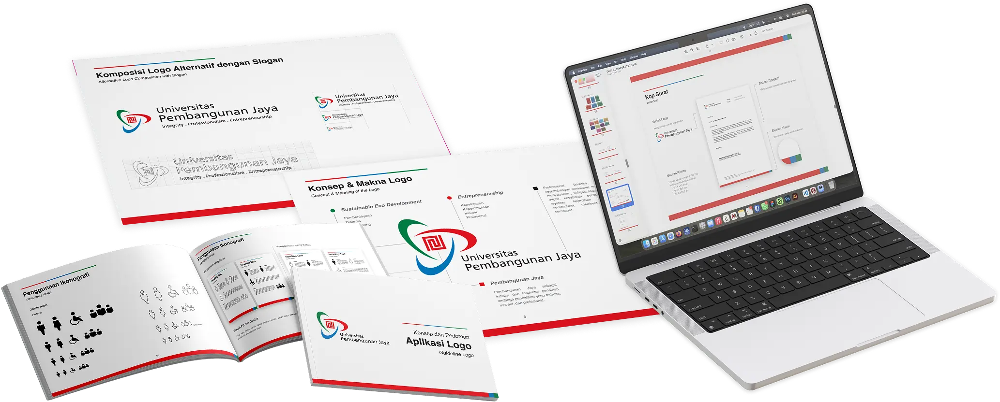
Graphic Standard Manual
A graphic standard manual for Pembangunan Jaya University, developed at end of 2025 onwards.
Commercial Campaign
A commercial campaign project for V-Gen Portable SSD.
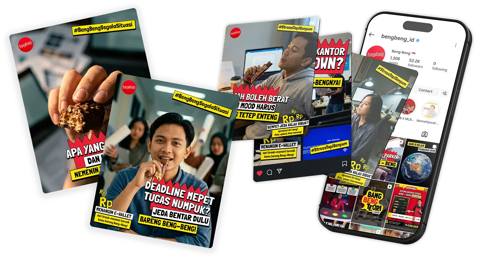
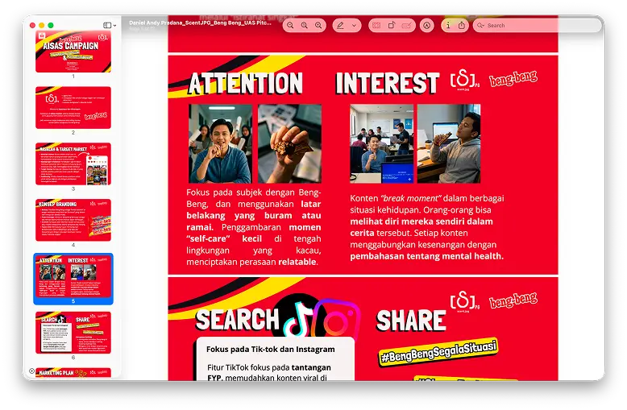
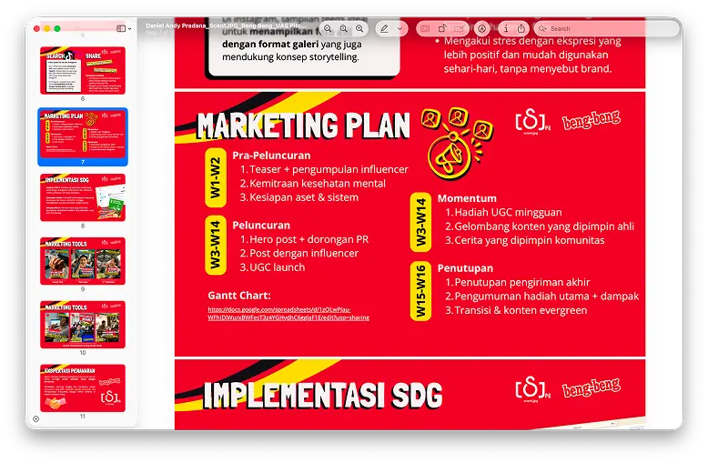
AISAS Study
A study on the AISAS model, which stands for Attention, Interest, Search, Action, and Share. This study explores how this model can be applied in Beng-Beng by Mayora marketing strategies.
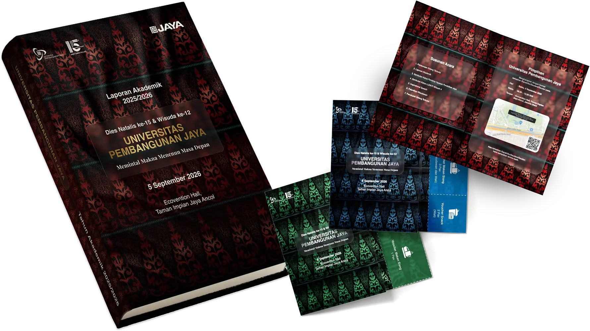
Graduation Materials
Graduation materials for Pembangunan Jaya University, developed in 2026. This includes various design elements such as invitations, banners, and other related materials.
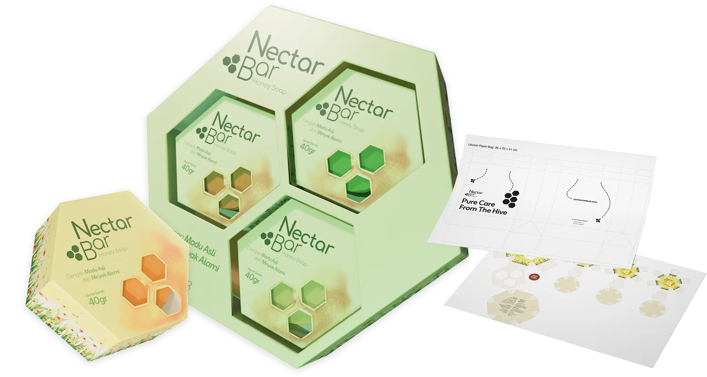
Nectar Bar Soap Packaging
A packaging design for Nectar Bar Soap, which won 1st place in the B&H packaging design competition by State Polytechnic of Jakarta, InPack 2025. This design was also recognized by the World Packaging Organization in the WorldStar Student Awards 2025.
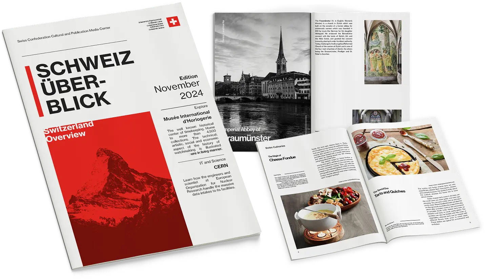
Editorial Design
An editorial design study focusing on layout based on Swiss design principles.
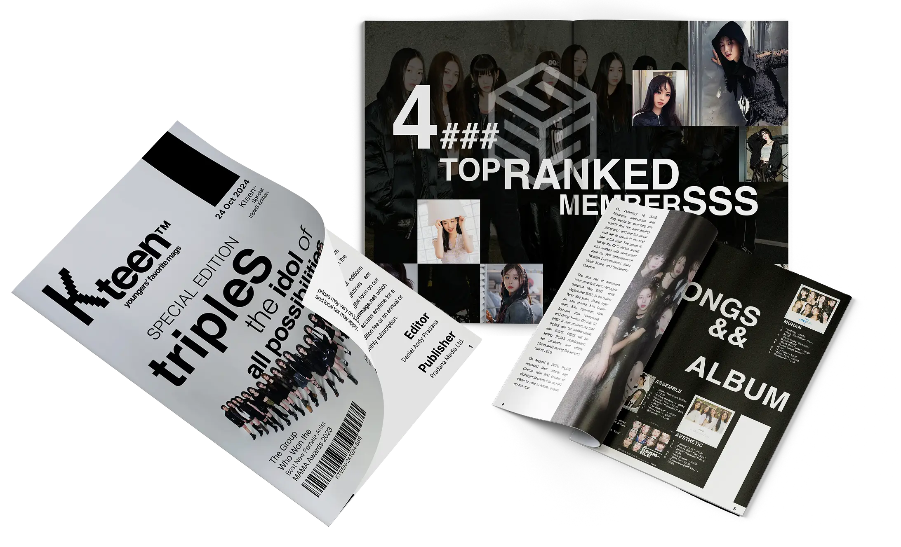
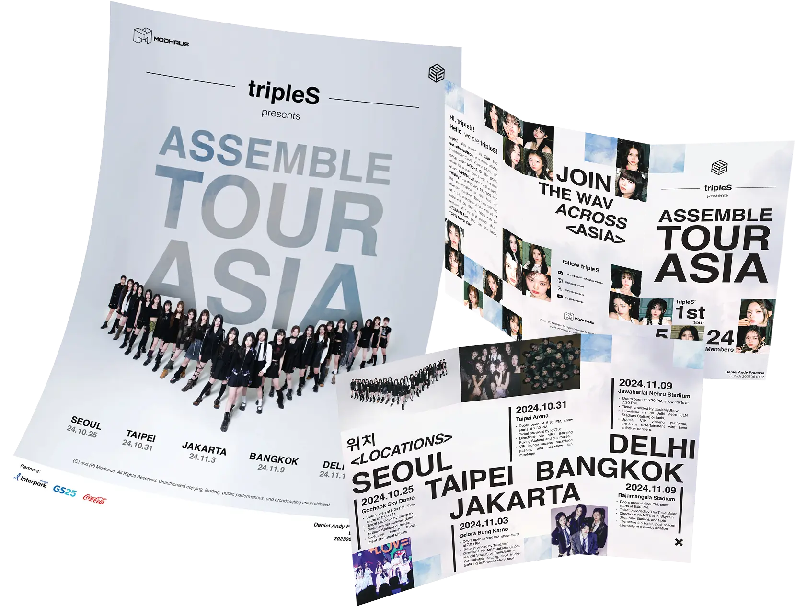
Thematic studies on layout and graphic production, with tripleS, a Kpop girl group, as the subject matter. This study explores various design techniques and principles to create visually appealing and effective editorial content.
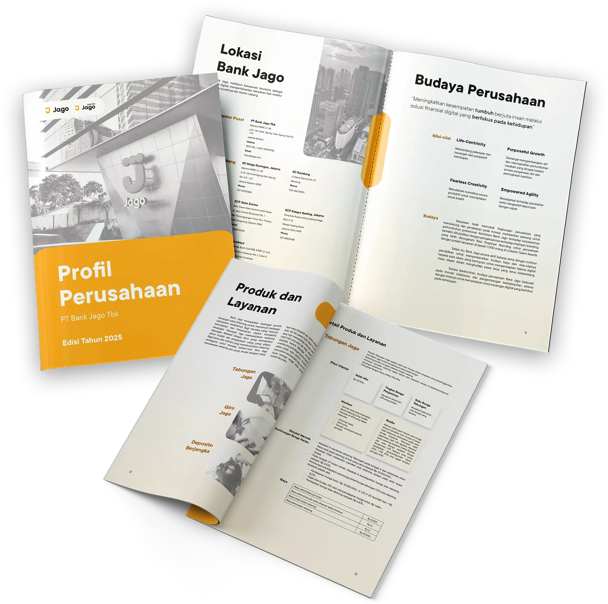
Jago Bank Company Profile
A comprehensive company profile design study for Jago Bank, showcasing their mission, values, and services.
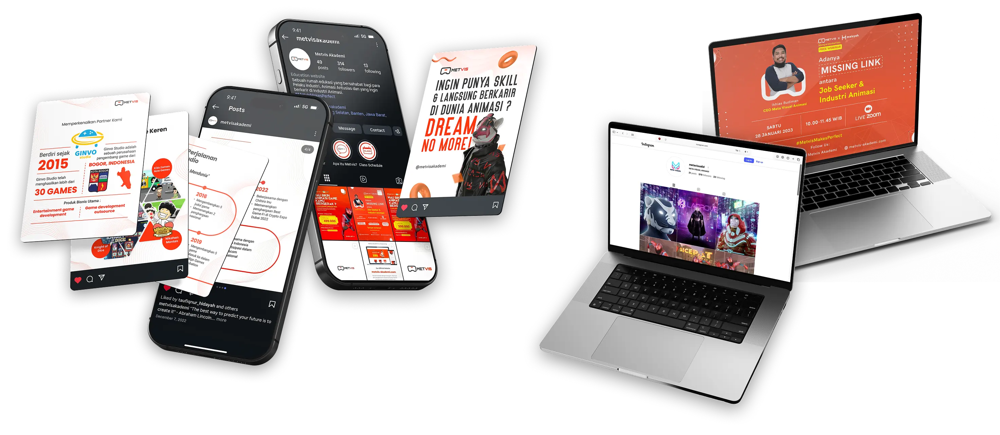
Social Media Marketing
A social media marketing study for Meta Visual Animation, mainly for their animation courses